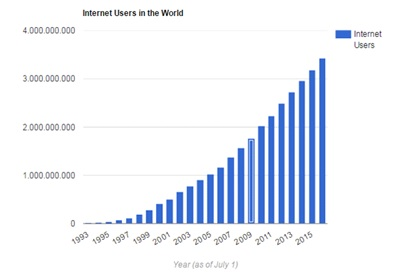

SỰ PHÁT TRIỂN CỦA MẠNG INTERNET VÀ INTERNET OF THINGS
Học kỳ I, năm học 2018-2019
3.NHỮNG CỘT MỐC QUAN TRỌNG CỦA INTERNET.
1969 Bộ Quốc phòng Mĩ đã xây dựng dự án ARPANET để nghiên cứu lĩnh vục mạng, theo đó các máy tính được liên kết với nhau và sẽ có khả năng tự định đường truyền tin ngay sau khi một phần mạng đã được phá hủy.
1972 trong 1 cuộc hội nghị quốc tế về truyền thông máy tính, Bob Kahn đã trình diễn mạng ARPANET liên kết 40 máy thông qua các bộ xử lý giao tiếp giữa các trạm cuối Terminal Interface Processor-TIP. Cũng năm này nhóm interNET Working Group (INWG) do Vinton Cerf làm chủ tịch ra đời nhằm đáp ứng nhu cầu thiết lập giao thức bắt tay (agreed-upon). Năm 1972 cũng là năm Ray Tomlinson đã phát minh ra E-mail để gửi thông điệp trên mạng. Từ đó đến nay, E-mail là một trong những dich vụ được dùng nhiều nhất. Ethernet (một giao thức trong mạng cục bộ).
Tháng 9/1973 Vinton Cerf và Bob Kahn đề xuất những cơ bản của Internet.Đó chính là những nét chính của giao thức TCP/IP
1974 BBN đã xây dựng giao thức ứng dụng Telnet cho phép sử dụng máy tính từ xa.
1976 phòng thí nghiệm của hãng AT&T phát minh ra dịch vụ truyền tệp cho mạng FTP
1978 Tom Truscott và Steve Bellovin thiết lập mạng USENET dành cho những người sử dụng UNIX. Mạng USENET là một trong những mạng phát triển sớm nhất và thu hút nhiều người nhất.
1979 ARPA thành lập ban kiểm soát cấu hình Internet.
1981 ra đời mạng CSNET (Computer Science NETwork) cung cấp các dịch vụ mạng cho các nhà khoa học ở trường đại học mà không cần truy cập vào mạng ARPANET.
1982 các giao thức TCP và IP được DAC và ARPA dùng đối với mạng ARPANET.Sau đó TCP/IP được chọn là giao thức chuẩn.
1983 ARPANET được tách ra thành ARPANET và MILNET.MILNET tích hợp với mạng dữ liệu quốc phòng, ARPANET trở thành 1 mạng dân sự.Hội đồng các hoạt động Internet ra đời, sau này được đổi tên thành Hội đồng kiến trúc Internet.
1991 Web Father, Tim Berners-Lee phát minh World Wide Web (www).
1995 Amazon được thành lập bởi Jeff Bezos. Cho đến nay, Amazon vẫn được đánh giá là một trong những công ty thương mại điện tử thành công và có quy mô lớn. Trong thời gian này, nhiều công ty bắt đầu nghiên cứu côn nghệ tìm kếm được thành lập như Alta Vista, Infoseek, Excite ….
1996 Yahoo! Được đưa lên sàn chứng khoán. Yahoo nổi tiếng với dịch vụ tìm kiếm, danh bạ, nội dung số, dịch vụ email và tin nhắn nhanh (Instant Messenger)
1997 MP3.com được thành lập. Chuẩn MP3 đã làm cho các tập tin âm nhạc và âm thanh dễ dàng được truyền đi trong môi trường internet. Mở đường cho công nghệ giải trí trên internet. Trong thời gian này, thuật ngữ “search engine optimization”(Tối ưu hóa cho công cụ tìm kiếm) được sử dụng đầu tiên trên một diễn đàn
1998 Google được thành lập bởi Larry Page và Sergey Brin. Mặc dù công nghệ tìm kiếm trên internet đã được nhiều công ty nghiên cứu phát triển trước đó, nhưng sản phẩm tìm kiếm của Google mới chính là điều mà người dùng internet thực sự mong đợi. Cho đến ngày nay, công cụ tìm kiếm của Google vẫn là công cụ tìm kiếm được nhiều người sử dụng nhất. Sự ra đời của Google đã giúp cho người dùng internet khai thác thông tin tiện lợi hơn, và giúp cho các website có nhiều cơ hội hơn để tiếp cận với người dùng internet.
1999 Peter Merholz đưa ra khái niệm “blog”. Một cách đọc tắc của cụm từ Web log. Từ đây việc làm ra một website đã dễ dàng hơn, và người dùng có thể sử dụng internet làm nơi viết nhật ký. Về sau Blog không còn đơn giản là những nhật ký riêng trên internet mà còn là nơi chia sẻ kiến thức, kinh nghiệm, quan điểm cá nhân… và trở thành một công cụ quan trọng của truyền thông xã hội.
2000 Google AdWords, dịch vụ quảng cáo trên Google ra đời. Quảng cáo trên Google Adwords lú đó tính tiền theo CPM (số lượt xuất hiện của quảng cáo).
2002 Google AdWords thay đổi cách tính tiền thành PPC (Pay per click). Về sau, đây là một trong những hình thức quảng cáo được nhiều người làm marketing yêu chuộng nhất
2003 eBay topples Amazon as the most visited UK web site.
2006 Google mua lại YouTube với giá 1.6 tỷ USD. Mở ra một thời kỳ mới về xem phim và chia sẻ phim ảnh qua mạng internet.
2006 Facebook chính thức mở cửa cho người dùng đăng ký. Khái niệm mạng xã hội trở nên quen thuộc hơn với người dùng internet. Truyền thông xã hội bắt đầu phát triển mạnh mẻ. Vai trò của người dùng internet trong truyền thông được đánh giá cao. Quyền lực của người dùng internt cũng tăng lên Time Magazine đã bầu chọn “You” (người dùng internet) là nhân vật của năm vì những hoạt động online của người dùng internet.
2007 Iphone ra đời, mở ra một chương mới của điện thoại thông minh, từ đây sự gắn kết của truyền thông di động và internet càng chặt chẽ hơn.
2008 Thế giới có 1.4 tỷ người dùng internet
2011 Thế giới có hơn 2 tỷ người sử dụng internet...

Sự gia tăng người dùng qua các năm